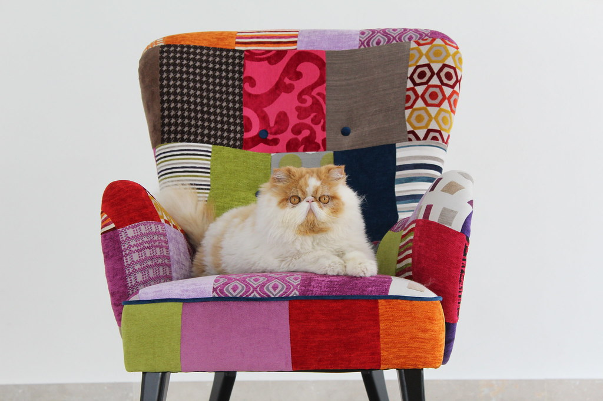
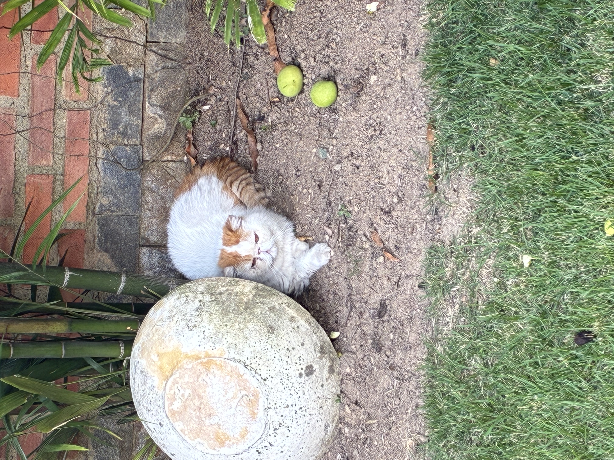
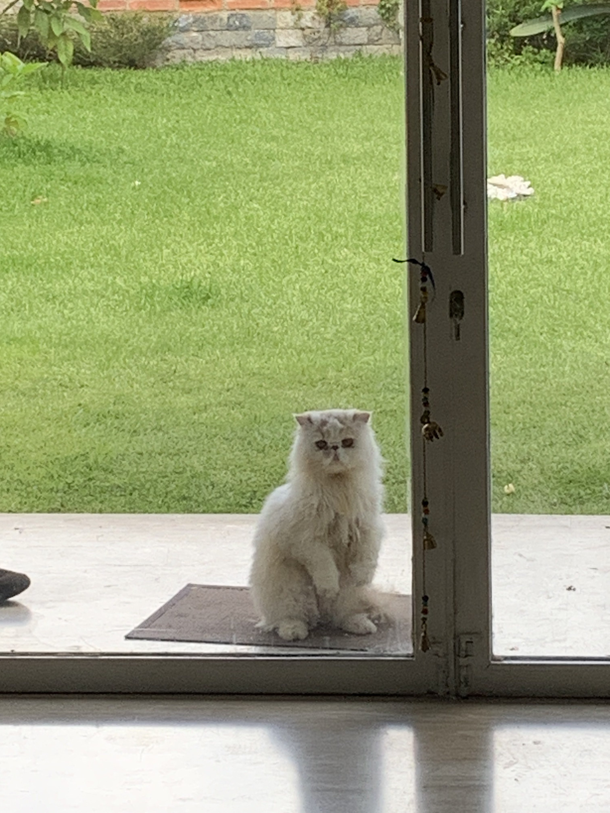
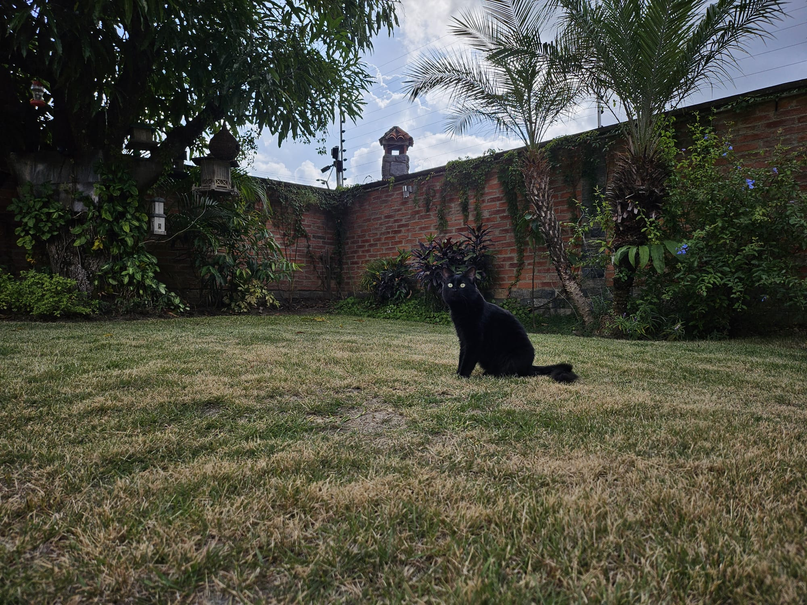

EuroBERT CPT NEW!
Creating a long-context encoder model that supports African languages!
ニコラス
research · essays · cats · quotes · _
I'm a computer scientist who loves tea, wildlife, history, philosophy, and manga. I'm deeply fascinated by the colourful world we live in, and who wouldn't be? I currently do NLP research as well.
I may have mentioned this before but I really love tea. I make sure to get the appropriate water temperature depending on the tea I’m brewing. For hojicha or black tea, boiling water suffices. For matcha, this is not the case (80°C is best). Ditto for most types of green tea. Time is of the essence here as well, especially if you’re drinking tea without accessories (milk, sugar) as Shennong intended. Steep tea for too little time and you’re drinking water; for too long you risk an overdose of disgust. There is little room for error. But for those who persevere, they shall be handsomely rewarded. A perfectly made cup of tea, of any kind, ranks amongst the most delightful sensory experiences that our bodies are capable of providing us. Its sweet or grassy scent, the warmth of the cup in your hand. The hot sweetness of the first sip. The relaxation that succeeds it. Mindfulness has never been so easy. Just focus on that feeling. When Iroh said that being sick of tea was akin to being sick of breathing, his comparison was disanaloguous. Breathing is bland and monotone, it sustains us yes, but it does not fuel us. Being sick of that is far more understandable. Being sick of tea is being sick of happiness, and I can do without that masochism.
Creating a long-context encoder model that supports African languages!
Ran and repaired AfriMTEB on MTEB, and made important adjustments to the BM25's MTEB implementation, allowing it to support virtually every language, and other contributions.
A Big Five personality questionnaire with response-validity checks, which collects data for a text-to-personality model (WIP)
Personal essays, newest first. Each title opens its own page.




More photos on my Flickr »
Above all, don't lie to yourself. The man who lies to himself and listens to his own lie comes to a point that he cannot distinguish the truth within him, or around him, and so loses all respect for himself and for others. And having no respect he ceases to love.— Father Zosima (Dostoyevsky <3)
By effort and heedfulness, discipline and self-mastery, let the wise one make for himself an island which no flood can overwhelm.— Siddhartha Gautama
Those who know that they are profound strive for clarity. Those who would like to seem profound to the crowd strive for obscurity. For the crowd believes that if it cannot see to the bottom of something it must be profound. It is so timid and dislikes going into the water.— Friedrich Nietzsche
Everything will turn out right, the world is built on that.— Mikhail Bulgakov
Our own life has to be our message.— Thich Nhat Hanh
All models are wrong, but some are useful— George E. P. Box